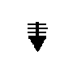
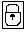

Le manuel que vous avez entre les mains a été traduit en France. Voici les principales différences et particularités dont vous devez tenir compte.
Les illustrations sont fournies à titre d'exemple. Certaines peuvent contenir des données propres à la France.
La terminologie des titres peut différer d'un pays à l'autre. Reportez-vous au tableau ci-dessous au besoin.
France | Canada |
ingénieur commercial |
représentant |
agence commerciale |
succursale |
ingénieur technico-commercial |
informaticien |
inspecteur |
technicien du matériel |
Les lettres sont disposées différemment: le clavier français est de type AZERTY, et le clavier français-canadien, de type QWERTY.
Les touches présentées dans le tableau d'équivalence suivant sont libellées différemment selon qu'il s'agit du clavier de la France, du clavier du Canada ou du clavier des États-Unis. Reportez- vous à ce tableau pour faire correspondre les touches françaises figurant dans le présent document aux touches de votre clavier.
France | Canada | États-Unis |
(Pos1) |
Home | |
Fin |
Fin |
End |
(PgAr) |
PgUp | |
(PgAv)  |
PgDn | |
Inser |
Inser |
Ins |
Suppr |
Suppr |
Del |
Échap |
Échap |
Esc |
Attn |
Intrp |
Break |
Impr écran |
ImpÉc |
PrtSc |
Verr num |
Num |
Num Lock |
Arrêt défil |
Défil |
Scroll Lock |
(Verr maj)  |
FixMaj |
Caps Lock |
Alt Gr |
AltCar |
Alt (à droite) |
Certains messages mentionnés dans cet ouvrage peuvent présenter des différences selon l'environnement linguistique dans lequel vous travaillez - français ou français (Belgique).
Les indications ci-dessous permettront à l'utilisateur d'établir la correspondance entre le texte de cet ouvrage et l'environnement propre à la Belgique.
FRANCE | BELGIQUE |
Entrée |
Enter |
Retour |
Return |
Échap |
Esc |
Maj |
Shift |
VerrMaj |
Shift Lock |
Pg AV |
Page Down |
Pg AR |
Page Up |
VerrNum |
Num Lock |
Valid |
Action |
RetourArr |
Backspace |
Inser |
Insert |
Suppr |
Delete |
Pos1 |
Home |
Fin |
End |
Remarque: BlocNum désigne
le bloc de touches numériques situé sur la droite du clavier.